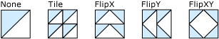

Практическое руководство. Создание различных шаблонов мозаики с помощью TileBrush
В этом примере показано, как использовать TileMode свойство TileBrush для создания шаблона.
TileMode Свойство позволяет указать, как содержимое TileBrush является повторяется, то есть, мозаикой для заполнения области вывода. Чтобы создать шаблон, необходимо задать TileMode для Tile, FlipX, FlipY, или FlipXY. Необходимо также задать Viewport из TileBrush , чтобы он был меньше, чем область закрашивания; в противном случае только одна Плитка производству, независимо от того, который TileMode используется параметр.
Пример
В следующем примере создается пять DrawingBrush объекты, дает им каждый отдельный TileMode параметр и использует их для рисования пяти прямоугольников. Несмотря на то, что в этом примере используется DrawingBrush для демонстрации TileMode поведение, TileMode работает одинаково для всех TileBrush объектов, то есть для ImageBrush, VisualBrush, и DrawingBrush.
На следующей иллюстрации показан результат выполнения этого примера.

Шаблоны мозаики, созданные с помощью свойства TileMode
using System;
using System.Windows;
using System.Windows.Controls;
using System.Windows.Input;
using System.Windows.Media;
using System.Windows.Media.Animation;
using System.Windows.Shapes;
namespace BrushesIntroduction
{
public class TileModeExample : Page
{
public TileModeExample()
{
Background = Brushes.White;
Margin = new Thickness(20);
StackPanel mainPanel = new StackPanel();
mainPanel.HorizontalAlignment = HorizontalAlignment.Left;
//
// Create a Drawing. This will be the DrawingBrushes' content.
//
PolyLineSegment triangleLinesSegment = new PolyLineSegment();
triangleLinesSegment.Points.Add(new Point(50, 0));
triangleLinesSegment.Points.Add(new Point(0, 50));
PathFigure triangleFigure = new PathFigure();
triangleFigure.IsClosed = true;
triangleFigure.StartPoint = new Point(0, 0);
triangleFigure.Segments.Add(triangleLinesSegment);
PathGeometry triangleGeometry = new PathGeometry();
triangleGeometry.Figures.Add(triangleFigure);
GeometryDrawing triangleDrawing = new GeometryDrawing();
triangleDrawing.Geometry = triangleGeometry;
triangleDrawing.Brush = new SolidColorBrush(Color.FromArgb(255, 204, 204, 255));
Pen trianglePen = new Pen(Brushes.Black, 2);
triangleDrawing.Pen = trianglePen;
trianglePen.MiterLimit = 0;
triangleDrawing.Freeze();
//
// Create the first TileBrush. Its content is not tiled.
//
DrawingBrush tileBrushWithoutTiling = new DrawingBrush();
tileBrushWithoutTiling.Drawing = triangleDrawing;
tileBrushWithoutTiling.TileMode = TileMode.None;
// Create a rectangle and paint it with the DrawingBrush.
Rectangle noTileExampleRectangle = createExampleRectangle();
noTileExampleRectangle.Fill = tileBrushWithoutTiling;
// Add a header and the rectangle to the main panel.
mainPanel.Children.Add(createExampleHeader("None"));
mainPanel.Children.Add(noTileExampleRectangle);
//
// Create another TileBrush, this time with tiling.
//
DrawingBrush tileBrushWithTiling = new DrawingBrush();
tileBrushWithTiling.Drawing = triangleDrawing;
tileBrushWithTiling.TileMode = TileMode.Tile;
// Specify the brush's Viewport. Otherwise,
// a single tile will be produced that fills
// the entire output area and its TileMode will
// have no effect.
// This setting uses realtive values to
// creates four tiles.
tileBrushWithTiling.Viewport = new Rect(0, 0, 0.5, 0.5);
// Create a rectangle and paint it with the DrawingBrush.
Rectangle tilingExampleRectangle = createExampleRectangle();
tilingExampleRectangle.Fill = tileBrushWithTiling;
mainPanel.Children.Add(createExampleHeader("Tile"));
mainPanel.Children.Add(tilingExampleRectangle);
//
// Create a TileBrush with FlipX tiling.
// The brush's content is flipped horizontally as it is
// tiled in this example
//
DrawingBrush tileBrushWithFlipXTiling = new DrawingBrush();
tileBrushWithFlipXTiling.Drawing = triangleDrawing;
tileBrushWithFlipXTiling.TileMode = TileMode.FlipX;
// Specify the brush's Viewport.
tileBrushWithFlipXTiling.Viewport = new Rect(0, 0, 0.5, 0.5);
// Create a rectangle and paint it with the DrawingBrush.
Rectangle flipXTilingExampleRectangle = createExampleRectangle();
flipXTilingExampleRectangle.Fill = tileBrushWithFlipXTiling;
mainPanel.Children.Add(createExampleHeader("FlipX"));
mainPanel.Children.Add(flipXTilingExampleRectangle);
//
// Create a TileBrush with FlipY tiling.
// The brush's content is flipped vertically as it is
// tiled in this example
//
DrawingBrush tileBrushWithFlipYTiling = new DrawingBrush();
tileBrushWithFlipYTiling.Drawing = triangleDrawing;
tileBrushWithFlipYTiling.TileMode = TileMode.FlipY;
// Specify the brush's Viewport.
tileBrushWithFlipYTiling.Viewport = new Rect(0, 0, 0.5, 0.5);
// Create a rectangle and paint it with the DrawingBrush.
Rectangle flipYTilingExampleRectangle = createExampleRectangle();
flipYTilingExampleRectangle.Fill = tileBrushWithFlipYTiling;
mainPanel.Children.Add(createExampleHeader("FlipY"));
mainPanel.Children.Add(flipYTilingExampleRectangle);
//
// Create a TileBrush with FlipXY tiling.
// The brush's content is flipped vertically as it is
// tiled in this example
//
DrawingBrush tileBrushWithFlipXYTiling = new DrawingBrush();
tileBrushWithFlipXYTiling.Drawing = triangleDrawing;
tileBrushWithFlipXYTiling.TileMode = TileMode.FlipXY;
// Specify the brush's Viewport.
tileBrushWithFlipXYTiling.Viewport = new Rect(0, 0, 0.5, 0.5);
// Create a rectangle and paint it with the DrawingBrush.
Rectangle flipXYTilingExampleRectangle = createExampleRectangle();
flipXYTilingExampleRectangle.Fill = tileBrushWithFlipXYTiling;
mainPanel.Children.Add(createExampleHeader("FlipXY"));
mainPanel.Children.Add(flipXYTilingExampleRectangle);
Content = mainPanel;
}
//
// Helper method that creates rectangle elements.
//
private static Rectangle createExampleRectangle()
{
Rectangle exampleRectangle = new Rectangle();
exampleRectangle.Width = 50;
exampleRectangle.Height = 50;
exampleRectangle.Stroke = Brushes.Black;
exampleRectangle.StrokeThickness = 1;
return exampleRectangle;
}
//
// Helper method that creates headers for the examples.
//
private static TextBlock createExampleHeader(String text)
{
TextBlock header = new TextBlock();
header.Margin = new Thickness(0, 10, 0, 0);
header.Text = text;
return header;
}
}
}
<!-- Demonstrates TileMode values. -->
<Page
xmlns="http://schemas.microsoft.com/winfx/2006/xaml/presentation"
xmlns:x="http://schemas.microsoft.com/winfx/2006/xaml"
xmlns:PresentationOptions="http://schemas.microsoft.com/winfx/2006/xaml/presentation/options"
xmlns:mc="http://schemas.openxmlformats.org/markup-compatibility/2006"
mc:Ignorable="PresentationOptions"
Background="White" Margin="20">
<Page.Resources>
<!-- Define a Drawing as a resource that it can be easily used
as content for all the DrawingBrush objects in this example. -->
<GeometryDrawing x:Key="TriangleDrawing"
Geometry="M0,0 L50,0 0,50Z" Brush="#CCCCFF"
PresentationOptions:Freeze="True" >
<GeometryDrawing.Pen>
<Pen Thickness="2" Brush="Black" MiterLimit="0" />
</GeometryDrawing.Pen>
</GeometryDrawing>
</Page.Resources>
<StackPanel HorizontalAlignment="Left">
<TextBlock Margin="0,10,0,0">None</TextBlock>
<Rectangle Width="50" Height="50" Stroke="Black" StrokeThickness="1">
<Rectangle.Fill>
<!-- The DrawingBrush's content is not tiled in this example. -->
<DrawingBrush TileMode="None"
Drawing="{StaticResource TriangleDrawing}" />
</Rectangle.Fill>
</Rectangle>
<TextBlock Margin="0,10,0,0">Tile</TextBlock>
<Rectangle Width="50" Height="50" Stroke="Black" StrokeThickness="1">
<Rectangle.Fill>
<!-- The DrawingBrush's content is tiled in this example.
The Viewport property is set to create four tiles. -->
<DrawingBrush TileMode="Tile" Viewport="0,0,0.5,0.5"
Drawing="{StaticResource TriangleDrawing}"/>
</Rectangle.Fill>
</Rectangle>
<TextBlock Margin="0,10,0,0">FlipX</TextBlock>
<Rectangle Width="50" Height="50" Stroke="Black" StrokeThickness="1">
<Rectangle.Fill>
<!-- The DrawingBrush's content is flipped horizontally as it is
tiled in this example. -->
<DrawingBrush
TileMode="FlipX" Viewport="0,0,0.5,0.5"
Drawing="{StaticResource TriangleDrawing}" />
</Rectangle.Fill>
</Rectangle>
<TextBlock Margin="0,10,0,0">FlipY</TextBlock>
<Rectangle Width="50" Height="50" Stroke="Black" StrokeThickness="1">
<Rectangle.Fill>
<!-- The DrawingBrush's content is flipped vertically as it is
tiled in this example. -->
<DrawingBrush TileMode="FlipY" Viewport="0,0,0.5,0.5"
Drawing="{StaticResource TriangleDrawing}" />
</Rectangle.Fill>
</Rectangle>
<TextBlock Margin="0,10,0,0">FlipXY</TextBlock>
<Rectangle Width="50" Height="50" Stroke="Black" StrokeThickness="1">
<Rectangle.Fill>
<!-- The DrawingBrush's content is flipped horizontally
and vertically as it is tiled in this example. -->
<DrawingBrush TileMode="FlipXY" Viewport="0,0,0.5,0.5"
Drawing="{StaticResource TriangleDrawing}" />
</Rectangle.Fill>
</Rectangle>
</StackPanel>
</Page>